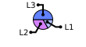

NEWS
Awesome window manager framework version 4.0 changes
Awesome 4.0 is the first release of the v4 API level, breaking the proven v3.5 API level after 4 years. This requires to port the existing user configuration and extensions to the new API.
This document offers an overview of the new features and required changes for existing users.
New features
Input
Mouse move and resize handlers
The code used to resize and move clients has been refactored to allow plugins to be attached. This includes:
- display the client geometry in the wibar
- implement a resize grid
- implement delayed resizing (like Windows 3.11 and TWM)
- have touch-friendly resize handles (implemented by the Collision extension)
- allow window snapping (implemented)
- allow edge tiling (like Windows 7+ (AeroSnap) , KDE and Gnome) (implemented)
- move to the next tag when dragged to the edge (like KDE3) (disabled by default)
See:
.
Edge tiling (AeroSnap)
Clients are now resized when dragged to the screen edge similar to other window
managers. The width of the border can be controlled by the
beautiful.snap_border_width theme variable. The edge shape with
beautiful.snap_shape (see gears.shape) and can be disabled by setting
awful.mouse.snap.edge_enabled = false
Edge snapping
While this was already supported, this feature has been extensively extended. It can be disabled by setting
awful.mouse.snap.client_enabled = false
Hotkey popup
It is now possible to display the list of active keyboard shortcuts by pressing
mod4 + s (hotkeys_popup.show_help).
See:
- awful.hotkeys_popup
- awful.hotkeys_popup.keys
- awful.hotkeys_popup.keys.vim
- awful.hotkeys_popup.widget
New tag and layout properties
Generic useless gap
Adds an empty space between clients.
See:
Master fill policies
Allows the layout to optionally take all the space when there is no “slave”
client or to use a smaller screen area. For example, if only one terminal is
present in a awful.layout.suit.tile.left layout, then instead of filling the
whole screen, it wont be larger than it would otherwise be if there were more
clients.
See:
Volatile
Tags can now be volatile. A volatile tag will be destroyed when its last
client has been untagged. This is useful for temporary layouts or tags
dedicated to a single client.
See:
The corner layout
A new client layout with a larger master client and both a vertical and an horizontal row of slave clients.
New client properties
- client.focusable is now read/write (compared to read only in the previous versions)
- client.valid tells if the client still really exist or if the object is waiting to be deleted
- client.floating is now a client property
- client.x / client.y / client.width / client.height are client.geometry aliases
- client.first_tag is a convenience wrapper for
c:tags()[1]
Client signaling
There is now an awesome.unix_signal signal table with all platform specific
signals and their indices. There is also an awesome.kill() function to send
signals to clients. This can be used, among other thing, to pause and resume
clients.
New client rules (awful.rules)
All of the new client properties can be used in rules. In addition, the following ones have been added:
placement: use the awful.placement method (or combinations) to place the client. While older version of Awesome allowed to use callbacks here, it didn’t support all corner cases such as titlebar offsets and border_width.titlebars_enabled: older versions of Awesome had a global variable to enable or disable titlebars. This is now delegated to the rules.new_tag: allows to create a tag for the client instead of using an existing one.- The tag property has been expanded to also find tags from their name.
- The
tagsproperty now tries to merge the current tags into the array to fix some other properties. - All geometry properties are now executed at once to avoid side effects.
- The
focusis now going through the focus filters instead of being applied as-is (see the focus filter section).
User rules
It is now possible to register new rules by adding them to some awful.rules arrays. This can be used by modules to add extra functionalities or to avoid boilerplate code in callbacks.
- awful.rules.high_priority_properties: before most other rules are executed.
- awful.rules.extra_properties: together with normal rules.
- awful.rules.delayed_properties: after most other rules, but before
focus.
Those extra rules also have the capability to mutate the current rule array.
New widgets
Widgets
| Name | Example |
|---|---|
| wibox.widget.checkbox | |
| wibox.widget.piechart |  |
| wibox.widget.progressbar |  |
| wibox.widget.slider |
Containers
| Name | Example |
|---|---|
| wibox.container.arcchart | |
| wibox.container.radialprogressbar |
Layouts
| Name | Example |
|---|---|
| wibox.layout.ratio |  |
| wibox.layout.stack |
Other widgets, like the taglist and tasklist, gained many new
configuration features such as empty colors and shape.
See:
New APIs
The new and streamlined property system
Previously some core objects, such as clients or tags, were static. It wasn’t possible to directly set new properties on them. This is now supported:
c.my_new_property = "bar"
Also all properties previously accessible from the awful module are now
directly accessible on the object:
-- Before awful.client.floating.set(c, true) -- Now c.floating = true
See the “deprecated” section below for the list of functions that have been replaced by properties or methods.
The widgets API also received a similar overhaul. Both getters/setters and the property APIs are now supported.
-- Before mytextbox:set_text("Foobar") myimagebox:set_resize(not myimagebox:get_resize()) -- Now mytextbox.text = "Foobar" myimagebox.resize = not myimagebox.resize
Awesome 4.0 restores a feature found in older versions of Awesome.
All widgets now have properties again. While all :set_foo(bar) type accessors
are still fully (and forever) supported, it is now possible to do .foo = bar
and obj.foo = not obj.foo . This is supported for all official widgets,
containers and layouts.
Declarative widget syntax is supported again
Awesome 4.0 re-introduces the declarative widget syntax. This feature was lost when Awesome 3.5 introduced the new (and much, much better) widget system. It is possible to do it again.
See:
Most documentation examples have been adapted to use this syntax instead of the imperative one. Both syntaxes are fully supported.
For example:
-- Imperative local l = wibox.layout.fized.horizontal() local i = wibox.widget.imagebox() local t = wibox.widget.textbox() i:set_image("/path/to/awesomeness.png") t:set_text("is awesome") l:add(i) l:add(t) -- Declarative local l = wibox.layout { { image = "/path/to/awesomeness.png", widget = wibox.widget.imagebox }. { text = "is awesome", widget = wibox.widget.textbox }. layout = wibox.layout.fized.horizontal }
The request API
Awesome used to blindly allow requests from clients to steal focus or move
them around. There are now handlers to block such requests.
The request:: API is also used internally in Awesome itself to make
previously hard-coded behavior more flexible.
request::activate: When a client requests focus and/or being raised.request::geometry: When a client requests a position.request::screen: When a client needs a screen.request::select: When a tag wants to be selected.request::tag: When a client needs a tag.request::titlebars: When a client needs a titlebar.request::urgent: When a client requests attention.
See:
The defaults handlers are mostly located in the awful.ewmh module and comply with what the specification defines.
The placement API
While Awesome already had some basic placement function, the new API makes it possible to remove most hard-coded geometry handling code. From a user’s point of view this API allows for rich floating window management using awful.rules.
It provides generic placement functions that work with:
See:
The shape API
This new API allows nicer visuals and more complex themes.
Also note that the client shape functionality was broken in 3.5 and has been fixed. See:
The hierarchy API
The widget framework now produces a persistent model of its content rather than
a volatile one during the wibox drawing. This allows for better introspection
into the widget tree.
This model is now exposed through the mouse::enter, mouse::press,
mouse.current_widget and other APIs. This tree model also includes various
matrices to convert positions from the screen coordinates to the one of the
widgets (think of scaling and rotations).
This allows for interactive widgets such as a slider.
See:
New themes
A new xresources theme has been added. It uses native X11 assets such as
colors.
The default theme was improved with a more modern looking icon set.
Spawn and launcher improvements
Spawn
The newly renamed awful.spawn (previously awful.util.spawn) has been
extended into a whole API. It is now possible to define rules directly through
the spawn function.
Note that this only works if the client properly supports the freedesktop.org
startup notifications protocol. For example, to open a new urxvt in a new tag
from the command line, use:
awesome-client "require('awful.spawn')('urxvt', {new_tag=true})"
As another example, to launch a centered floating terminal in the currently selected tag of screen number 2:
awful.spawn("urxvt", { tag = screen[2].selected_tag, placement = awful.placement.centered, floating = true })
See:
All rule properties can be used, including the newly introduced placement ones (like above).
Launcher
awful.prompt gained many new features. One of them is the ability to add
custom keyboard shortcuts and mutate the command.
Paired with the new spawn features, it can be used to create mod4 + r
shortcuts to spawn the clients with arguments and callbacks.
See:
Focus stealing filters.
It is now possible to add and manage filters to restrict what kind of focus stealing is allowed. It can be used to mute noisy applications or to implement tag level policies. Every way a client could claim focus, including those from within Awesome itself, now goes through the request filters.
See:
Notification actions
Awesome now supports XDG notification (aka, naughty) actions.
See:
Custom xproperties support
Awesome can now save some data in the X11 server itself. This allows to communicate with external applications or so save state across restarts.
There is also supported/used for persistent client properties.
Better XKB keyboard layout support
Awesome now has native support for keyboard layout detection and setting. Using
setxkbmap to track the current layout is no longer necessary. This also
includes a widget to view the current layout.
See:
- awesome.xkb_set_layout_group
- awesome.xkb_get_layout_group
- awesome.xkb_get_group_names
wibox.widget.keyboardlayout
Other minor features
- awesome.composite_manager_running allows to detect if a compositor is running
- a new
—replacecommand line option is available (similar to other window managers) - clients now have an unified
maximizedproperty additionally to only horizontal and vertical - awful.layout.layouts is now where the client layout array is stored
- the
systrayelements order can be reversed and spacing can be added - it is now possible to get the layout of unselected tags (use with caution)
- tags can be swapped, former XMonad users with multiple screens can rejoice
- whole screens can now be swapped
- virtual screens can be created, moved and resized
- paths can be added to Lua’s search path via the
—searchargument - RandR 1.5 MONITOR support
- access to the X resource management database
- titlebars are now controlled using awful.rules and enabled by default
awesome-clientnow supports Lua code as its first argument (instead of reading from stdin)- preferred client icon size can now be configured (see awesome.set_preferred_icon_size)
- there is now an awesome.startup_errors string with the startup error (if any)
- Initial support for HiDPI monitors / different DPI per screen
- early support for stateful client layouts
- the
—versioncommand line option now provides more details and system information
Breaking changes
Awesome 4.0 is a major release. As with all other major release, the API was broken to accommodate for new capabilities. It isn’t as different as 3.5 was from 3.4 however. Many changes now cause a deprecation warning instead of breaking hard. However, it is important to take note of these changes in order to avoid new bugs.
Also see the tips for porting your configuration.
There can be off-screen clients unless rc.lua is adapted
To fix from bash/zsh without a config change:
echo 'for _,c in ipairs(client.get()) do require("awful.placement").no_offscreen(c) end' | awesome-client
And add the following to the global rc.lua awful.rule section:
placement = awful.placement.no_overlap+awful.placement.no_offscreen
Also note that this is the new official syntax for placement functions in
rules. It is recommended to remove existing ones that are used as callbacks and
move them to the placement rule property.
See:
Screens are no longer static
Replace rc.lua for s=1, screen.count() do with
awful.screen.connect_for_each_screen(function(s) and add a ) after the
section end.
All global widget tables should be adapted to avoid memory leaks.
Static code should not use screen.count() anymore. It should also always use
the screen object, as the integer representation is mostly deprecated.
See:
Screens are now objects
Previously: type(s) == "number", now: type(s) == "screen".
Doing screen[1].geometry is now partially deprecated and will probably print
a warning in future versions. Any code comparing number and screen objects is
now broken. Use screen objects instead of numbers.
See:
Awesome no longer restarts when a new screen is added
By default, rc.lua now handles screen changes without restarting.
It allows to preserve the tag and layout state across changes. Old rc.lua can
either be ported to handle this by taking clues from the new rc.lua or
restore the old behavior by adding the following at the end:
screen.connect_signal("list", awesome.restart)
See:
Widgets' :fit() and :draw() methods signature changed and :layout() is mandatory for layouts and containers
All custom widgets need to change their function signature.
The “align” layout default behavior changes
There is a new “strategy” property to define how the space is distributed.
Many APIs are deprecated, fix them before they turn into errors
For example, instead of awful.tag.viewonly(t), the recommended API is now
t:view_only(). The whole API has been standardized around this object
oriented notation. The warnings will be printed on stderr.
Most widgets' private APIs have changed
You should not use undocumented APIs. Those can change at any time, and this is no exception. The private API of all widgets has been broken.
Spawn changes
- It has been moved into its own module (awful.spawn).
- Some methods have been deprecated. It is not recommended to use blocking methods in Awesome. We made sure to make your life harder if you wish to ignore this warning. Really, using blocking calls in rc.lua has very nasty side effects.
See:
Prompt changes
Most arguments have been deprecated, they are now taken from the args
argument-by-name table. This was done because the number of optional arguments
was getting out of control.
See:
Timers are no longer part of the C API
Use gears.timer.
Deprecated functions
The previous Awesome API mixed different conventions. There was a major undertaking in 4.0 to make the API coherent and well documented.
Those functions have been renamed or converted to methods:
- awful.client.jumpto
- awful.client.visible
- awful.client.tiled
- awful.client.moveresize
- awful.client.movetotag
- awful.client.toggletag
- awful.client.movetoscreen
- awful.client.mark
- awful.client.unmark
- awful.client.ismarked
- awful.client.togglemarked
- awful.
client.floating.set - awful.client.isfixed
- awful.
client.floating.get - awful.
client.floating.toggle - awful.
client.dockable.get - awful.
client.dockable.set - awful.
client.property.get - awful.
client.property.set - awful.client.get_transient_for_matching
- awful.client.is_transient_for
- awful.mouse.client_under_pointer
- awful.
mouse.client.dragtotag.border - awful.
mouse.client.corner - awful.screen.getdistance_sq
- awful.screen.padding
- awful.tag.move
- awful.tag.swap
- awful.tag.delete
- awful.tag.gettags
- awful.tag.setscreen
- awful.tag.getscreen
- awful.tag.selectedlist
- awful.tag.selected
- awful.tag.setmwfact
- awful.tag.getmwfact
- awful.tag.setlayout
- awful.tag.setvolatile
- awful.tag.getvolatile
- awful.tag.setgap
- awful.tag.getgap
- awful.tag.setmfpol
- awful.tag.getmfpol
- awful.tag.setnmaster
- awful.tag.getnmaster
- awful.tag.seticon
- awful.tag.geticon
- awful.tag.setncol
- awful.tag.getncol
- awful.tag.getidx
- awful.tag.viewonly
- awful.tag.getdata
- awful.tag.getproperty
- awful.tag.setproperty
- awful.tag.withcurrent
- awful.util.get_rectangle_in_direction
awful.wibox.get_positionawful.wibox.set_positionawful.wibox.attachawful.wibox.alignawful.wibox.stretchawful.widget.progressbar.set_verticalawful.widget.progressbar.set_heightawful.widget.progressbar.set_width
Note that for 4.0, only a warning will be printed if these functions are used. They will eventually be removed.
Increased use of asynchronous programming
Many operations, such as re-draw, re-layout, geometry changes and various C API calls are now delayed to the end of the event loop iteration to avoid multiple changes per iteration (to not waste CPU time). The downside of this is that it is no longer reliable to assume the result of the previous line of code being applied in the next already.
Startup handling
There is no longer a “startup” argument to the client “manage” signal. If
Awesome is currently starting up, then awesome.startup is set to true.
Renamed modules
Just as the functions above, many modules have been moved to follow a naming convention. Using the old name will print a warning and will alias into the new module. Note that theses aliases are temporary and will be removed.
- awful.wibox
- awful.widget.graph
- awful.widget.progressbar
- awful.widget.textclock
- wibox.layout.constraint
- wibox.layout.margin
- wibox.layout.mirror
- wibox.layout.rotate
- wibox.layout.scroll
- wibox.widget.background
The mouse finder module is gone
It has been broken for ages, so we concluded nobody cared.
Menubar changes
menubar.menu_gen.generate is now asynchronous and needs a callback as an argument.
Rules execution order changes
The order in which rules are executed changed. It has been manually curated to avoid known race conditions between the rules execution. For example, adding a titlebar after setting the position resulted in an unwanted shift proportional to the titlebar size.
This is regarded as a breaking changes since it impacts the behavior of existing code, hopefully for the better.
Other
New dependencies
Awesome now depends on Gio and a few other new packages since 3.5. See the README for an extensive list.
A new documentation
Awesome 4.0 now uses LDoc and MarkDown based documentation. We also introduced official guides into our documentation:
- FAQ
- Contributing
- The declarative layout system
- Creating new widget
- Default configuration file documentation
- Change Awesome appearance
- Using Cairo and LGI
The new documentation is vastly superior to the previous one and includes previously missing elements such as:
- a hundred images (from zero)
- more than a hundred new code examples, most of them unit tested (from very, very few)
- all signals (previously partially documented in the wiki)
- all theme variables
- the object properties
- references throughout the documentation
- variable types (previously mostly undocumented)
- many auto-generated pages instead of manually curated (and out of date) ones
The old wiki is closing down
We are moving to a 2 tier solution based on official (and curated) documentation, and a Git based wiki solution. The old wiki has been partially closed down for years due to spam issues and given the API breakage in the past, a non-negligible percentage of the content and tips were no longer working properly.
New website address
The official website is now https://awesomewm.org/ and is now hosted by
GitHub. This will allow to retire the former server.
Awesome is now developed on GitHub
This isn’t technically part of the release and has been true for years, but as the first major releases since the move, it is a good time to point out that we retired the old infrastructure. This includes the bug tracker, download, wiki, website, repository and continuous integration system.
This move increased our development velocity, number of contributor, visibility count and reduced our infrastructure maintenance cost.
Test-driven development
Awesome went from 0% to 75% unit test coverage. We now have 4 testing systems:
- Linting (checks the code quality and consistency)
- Unit testing
- Documentation examples, documentation images and user interface appearance tests
- Integration tests
We also have a test matrix for:
- Different Lua versions
- Different screen resolutions
- Installation paths
- Dependencies versions
Packaging support
Apart from the existing packages in distributions, Awesome users can now use
“make package” to generate .deb or .rpm instead of using make install.